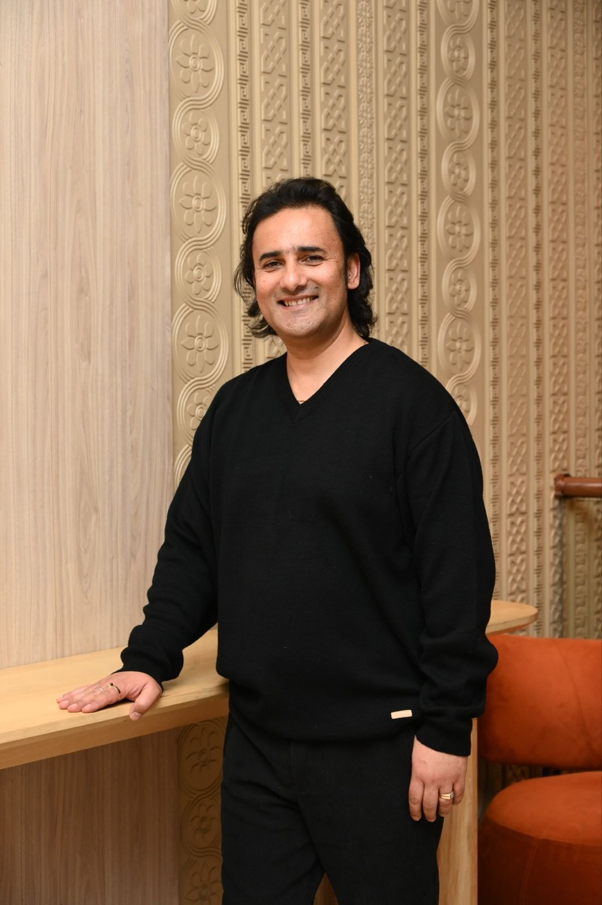

Mission
To support organizations, policymakers, and other stakeholders by providing expert evaluation, studies, and research services that are methodologically sound, data-driven, and tailored to the client's needs. Implementing a tailored approach ensures that methodologies are not only rigorous and data-driven but also designed to address our clients' unique needs and challenges.
Available services encompass a wide range of research methods and evaluation techniques to deliver actionable insights and evidence-based recommendations that drive effective decision-making and foster positive outcomes for our communities. Commitment to maintaining the highest standards of quality and integrity in offered services, fostering a collaborative environment that encourages innovation and continuous improvement.
Vision
The vision of the individual evaluation and research consultant is to be established as a reliable and strategic partner for organisations committed to maximising their impact and enhancing their outcomes. This is achieved through the delivery of thorough, evidence-based assessments and in-depth research that provide valuable insights and practical recommendations tailored to each organization's unique requirements.
It is intended to instill a robust culture of data-driven decision-making, encouraging organizations to leverage data and evidence in their strategic planning and operational processes. By fostering an environment of continuous improvement, BB Research and Consulting Services seek to empower organizations across various sectors. Ultimately, these collaborative efforts contribute to meaningful positive change in social, economic, and organizational contexts, leading to better outcomes for individuals and communities.
About Bibhuti

A VAT registered interdisciplinary evaluation and research consultant, Bibhuti has successfully led diverse evaluation, studies and coordinated research projects. His expertise allows him to effortlessly navigate and interpret complex social dynamics between individuals and the diverse social, cultural, and ecological contexts that shape their experiences. He approaches each project with a meticulous eye for detail, ensuring that even the most minor elements are managed effectively while focusing on the broader objectives and goals.
One of his strongest attributes is his solution-oriented mindset. Bibhuti excels at identifying emerging challenges and intricately analyzing them to devise effective strategies for resolution. He thrives under pressure and is adept at implementing these strategies swiftly, even when unexpected last-minute priorities arise. His composed demeanor during stressful situations not only helps him tackle challenges head-on but also instils a sense of confidence and trust in his team members.
In addition to his leadership skills, Bibhuti is a congenial and approachable team player. He prioritizes fostering an inclusive and collaborative environment where each member feels valued and heard. He actively encourages participation, ensuring every team member is motivated to contribute their unique perspectives and skills. This commitment to inclusivity enhances teamwork and promotes a culture of creativity and innovation, leading to tremendous overall success for the team.
Bibhuti pursued his academic journey at the Kathmandu University, in Nepal, studying environmental science (BSc Environmental Sciences Hons.) and Masters in Social sciences (Sociology). He also had the opportunity to serve as a researcher at university in Finland (Abo Academy University, Turku). This role enabled him to explore theoretical frameworks and apply academic insights to real-world challenges within the development sector. The international perspective he gained was instrumental in shaping his approach to development work.